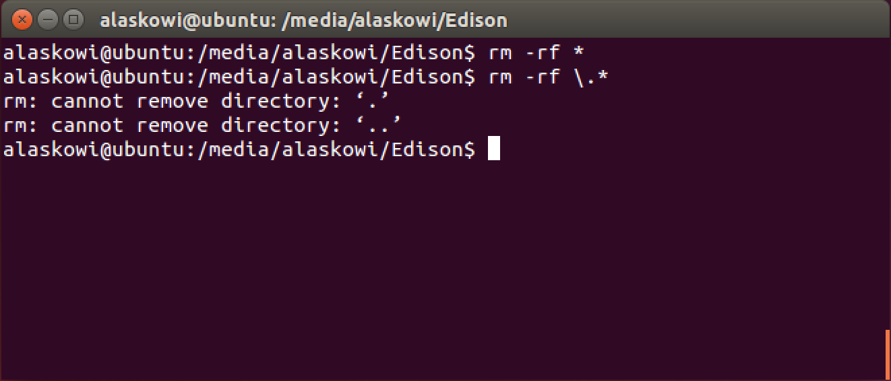

Step 1: Prepare built-in flash storage (Linux)
Make sure there are no files on the built-in flash storage of the Intel® Edison by formatting the storage. The storage must be formatted as FAT32.
-
In order to read or write to the Intel® Edison’s built-in flash storage, connect the Intel® Edison to your computer via the device mode micro-USB connector.

-
Open up a new Terminal window.
-
Use the “cd” command to go into the “Edison” drive.
Replace “[username]” with your actual username.
note - use “/media/[username]/Edison” not “/media/psf/Edison”.
cd /media/[username]/Edison -
Use the “rm” command to remove all visible and invisible files.
Double-check and make sure you are in the Intel® Edison’s drive!
rm –rf * rm –rf \.*
All files should now be removed. To confirm, use the “ls” command to list the files.
ls